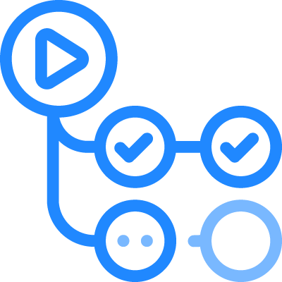
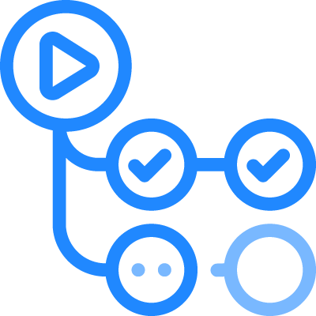

flowchart TB;
Collaborations --> _["Data Science"] & DevOps & Healthcare & HPC & MIRSG & WebDev;
_["Data Science"] -.-> data_science_responsibilities["
AI
Machine learning
Signal processing
Statistics
"];
DevOps -.-> ?;
Healthcare -.-> healthcare_responsibilities["
EMAP
Hospital projects
"];
HPC -.-> hpc_responsibilities["
C++
FPGAs
Fortran
GPUs
MPI
OpenMP
"];
MIRSG -.-> mirsg_responsibilities["
Medical imaging
OMERO
XNAT
"];
WebDev -.-> webdev_responsibilities["
CSS
HTML
JavaScript
"];
DevOps: An Introduction
2024-06-25
Discover
Building software is a team sport. In preparation for the upcoming sprint, teams must workshop to explore, organise, and prioritise ideas. Ideas must align to strategic goals and deliver customer impact. Agile can help guide DevOps teams.


Plan
DevOps teams should adopt agile practices to improve speed and quality. Agile is an iterative approach to project management and software development that helps teams break work into smaller pieces to deliver incremental value.

Build
Git is a free and open source version control system. It offers support for branching, merging, and rewriting repository history, which has led to many innovative and powerful workflows and tools for the development build process.
 

Test
Continuous integration (CI) allows many developers to contribute to a single shared repository. When code changes are merged, automated tests are run to ensure correctness before integration. Merging and testing code often help development teams gain reassurance in the quality and predictability of code once deployed.


Deploy
Continuous deployment (CD) allows teams to release features often into production in an automated fashion. Teams also have the option to deploy with feature flags, delivering new code to users steadily and methodically rather than all at once. This approach improves velocity, productivity, and sustainability of software development teams.


Operate
Manage the end-to-end delivery of IT services to customers. This includes the practices involved in design, implementation, configuration, deployment, and maintenance of all IT infrastructure that supports an organisation’s services.


Observe
Quickly identify and resolve issues that impact product uptime, speed, and functionality. Automatically inform your team of changes, high-risk actions, or failures, so you can keep services on.

Continuous Feedback
DevOps teams should evaluate each release and generate reports to improve future releases. By gathering continuous feedback, teams can improve their processes and incorporate customer feedback to improve the next release.